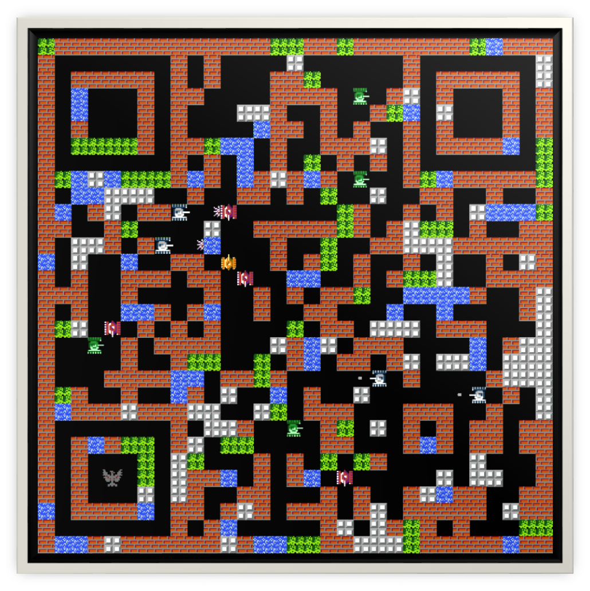

A brief Biography
- My name is Chong Wang
- I’m now a Ph.D. Candidate in Tsinghua University.
- Research Area：cQED(see more details and progress)
- Interested in Physics, Quantum Computation, Music, Sports, Calligraphy & Typesetting.
What else I can say about myself
Emmmmmm…How time flies! Without any sign, more than twenty years have passed. As looking back on the past, I can see a little innocent boy, even kind of foolish, walked on foot through the muddy countryroad all day long, rode bike from home to school day after day, and then caught the train home once a year. Those times accompanied by laughs and tear drops make the boy become the man who I am. I thank the happiness with my family and friends and I also appreciate the pain through all my life. Only the healing scars of wound can really make one remember and learn stuffs that he can never learn from books or anything else. So I never regret things that passed. I only look forward.
昨日种种，皆成今我，切莫思量，更莫哀，从今往后，怎么收获，怎么栽。
I was born into a normal wage-earners’ family in central china. Without any speciality and competition certificate, I went to college only by college entrance examination(ranked about 1000th in one million candidates) in 2008. I majored in Resources and Environment Science at Shanghai Jiao Tong University and soon felt apathetic. After one year’s struggling, I decided to change my subject to physics. I minored in Applied Physics and finally achieved two Bachelor degrees when graduated. After that, I applied for the postgraduate program at Shanghai Jiao Tong University to further my study. During my postgraduate career for master degree, I focused on the quantum optical phenomena of Micro-Cavity Optomechanical System. A few research results were accomplished there. After acquiring my master degree, I went to Tsinghua University to pursue my doctorate in Electronics Science and Technology.
The more I studied and experienced, the more I discovered about what I am really interested in and where I should belong from heart. Just like a fate that has been designed, my current research projects are Quantum Simulation in Circuit Quantum Electro-Dynamics and Quantum Computation with Superconducting Quantum Circuits, which combine Computer Science, Electronics and Quantum Physics. These subjects allows me to think further about how this world works and who we are, so I decide to treat them as my lifelong research topic. I admire people who persist in their initial determinations, however, as time goes by, I gradually realize that Life is not all about things we are chasing, and one can’t be surveyed in only one aspect——everyone is multidimensional. So far, my attitude towards life can be briefly paraphrased by Yang Wen-li‘s tag “There are some things one can achieve, some things one can’t.”
有做的到的事，也有做不到的事。
I read books, but I didn’t read much. My favourites are Lu Yao‘s Ordinary World and Yu Hua‘s To Live. I watch movies, such as 千と千尋の神隠し, Le fabuleux destin d’Amélie Poulain, Forrest Gump, Les choristes),500 Days of Summer and Secondhand Lions. Instead of going to cinema, I watch movies on my computer. For me, watching a movie is just like reading a book, which needs one hundred percent attention. In may spare time, I’d like to arrange some chords and melodic lines by guitar and piano. I like various kinds of songs. Things change, but music never goes out of style. Besides, I am also fond of badminton and riding.
I’ve seen things you people wouldn’t believe. Attack ships on fire off the shoulder of Orion. I’ve watched c-beams glitter in the dark near the Tannhauser Gate. All those…moments will be lost in time, like tears…in rain. Time to die………
I have read from someone’s blog that photograph is the key of the beauty of typesetting, and one photograph can tell more than hundreds of words. So here is a picture shot in Tsinghua before. Guess what they were doing?! Playground, Tsinghua, on Jan 31st, 2018")
Education

Tsinghua University
25th in QS World University Rankings 2018
- 2015.09 - Present: Ph.D. Candidate in Electronics Science and Technology
- Institute of Microelectronics
- Tsinghua National Laboratory for Information Science and Technology
Shanghai Jiao Tong University
62nd in QS World University Rankings 2018
- Master of Science in Theoretical Physics
- Department of Physics and Astronomy
- Key Laboratory of Arti cial Structures and Quantum Control
Shanghai Jiao Tong University
62nd in QS World University Rankings 2018
- Bachelor of Science in Resources and Environment
- Also minored in Applied Physics and achieved a Bachelor’s degree
Publications
- Chong Wang, Hua-Jun Chen, and Ka-Di Zhu, “Nonlinear optical response of cavity optomechanical system with second-order coupling,” Appl. Opt. 54, 4623-4628 (2015) DOI:10.1364/AO.54.004623
- Yu-long Liu,Chong Wang,Jing Zhang and Yu-xi Liu. “Cavity optomechanics: Manipulating photons and phonons towards the single-photon strong coupling”. Chin. Phys. B, 2018, 27(2):024204.DOI:10.1088/1674-1056/27/2/024204
Hobbies and Skill Exp
- Pop Piano
- Acoustic Guitar
- Chromatic Harmonica
- Arrangement based on cubase
- Video Editing
- Calligraphy and Painting
- Badminton
- Table Tennis
If you have any interest with these stuff, I’m very pleased with an open exchange of ideas and information!
Contact Me
The undemanding and proper way is sending me an Email
My Email address: wangchong525@126.com
For further communication, wechat is also available
My wechat QR code: 